How to Set up Tasks for Focus Sessions in Microsoft Windows Clock (Windows 11)
This tutorial covers:
How to Add a Task
How to Select a Task:
How to Deselect a Task:
How to Mark a Task as Not Complete:
How to Mark a Task as Not Started:
How to Rename a Task:
How to Delete a Task
No time to scroll down? Click through this tutorial presentation:
See a tutorial video:
How to Add a Task
- Step 1: First switch to Focus Sessions mode. In the upper right click the “+” or “Add a task” button, or in the center click the “+ Add a task” button. 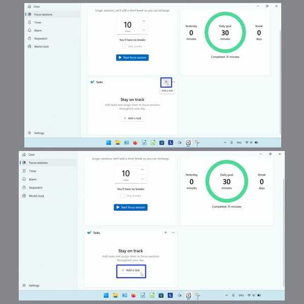
- Step 2: Type any text to name the task, and press Enter. 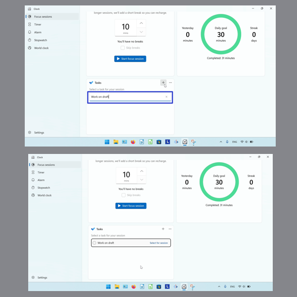
How to Select a Task
Step 1: Add a task. On the right side of the task, click “Select for session”.
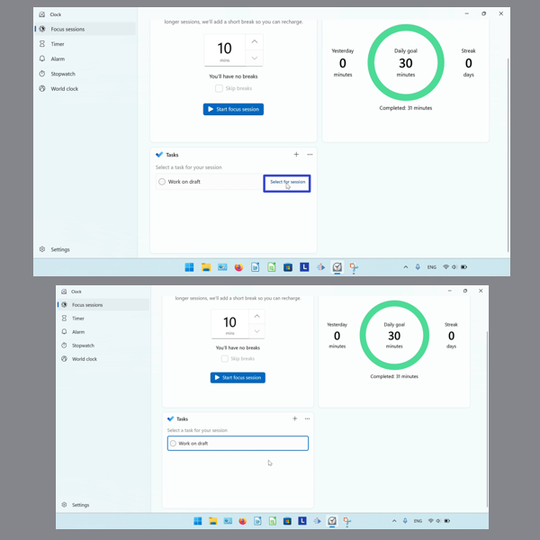
How to Select a Task With Right Click
- Step 1: First add a task. Right click the task.

- Step 2: In the menu that opens, click “Select for focus session”. 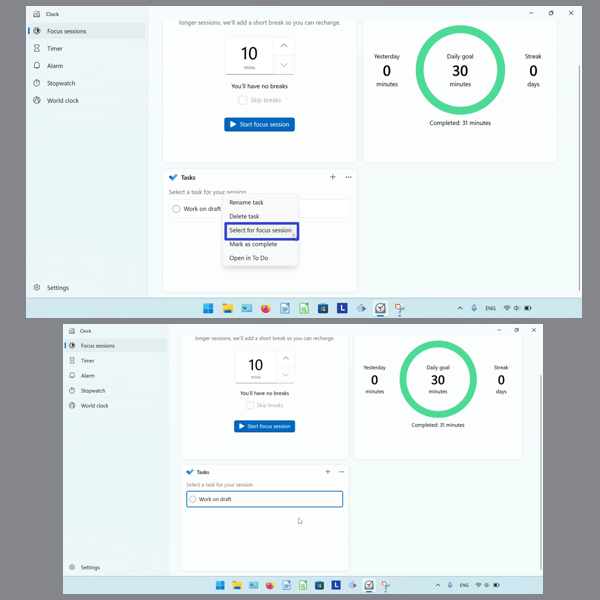
How to Deselect a Task With Click
- Step 1: Select a task for a Focus Session. On the right side of the task, click the “Deselect” option. 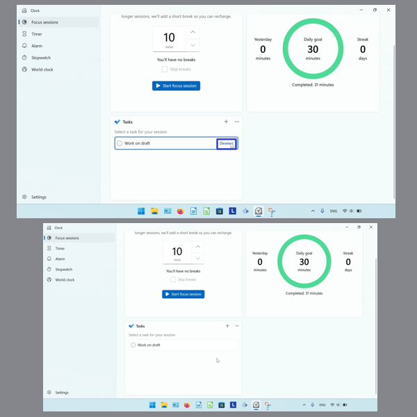
How to Deselect a Task With Right Click
- Step 1: First select a task for a Focus Session. Right click the task. 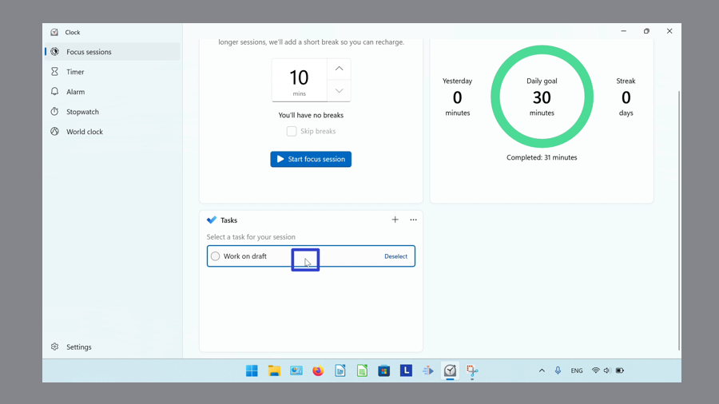
- Step 2: In the menu that opens, click “Deselect for focus session”. 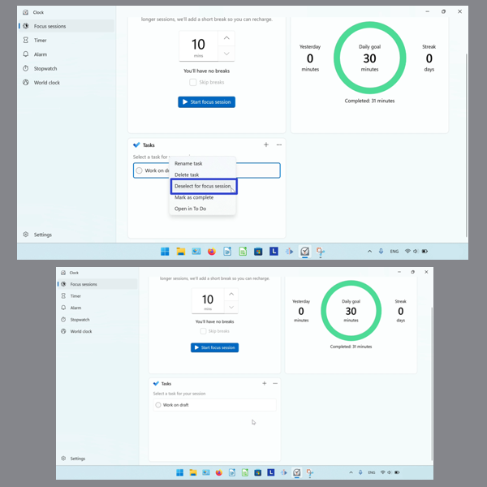
How to Mark a Task as Complete With Click
- Step 1: Add a task to a Focus Session. On the left side of the task, click the circle. 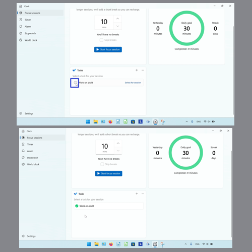
How to Mark a Task as Complete With Right Click
- Step 1: First add a task. Right click the task.
- Step 2: In the menu that opens, click “Mark as complete”. 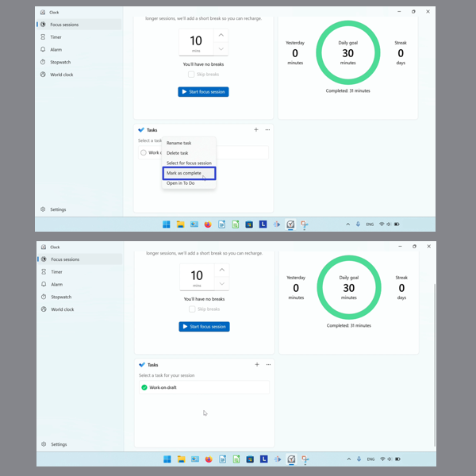
How to Mark a Task as Not Started With Click
- Step 1: Mark a task as complete. On the left side of the task, click the circle. 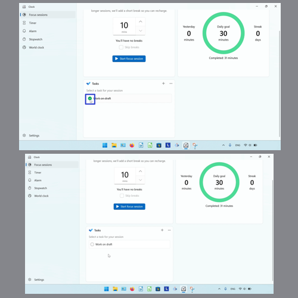
How to Mark a Task as Not Started With Right Click
- Step 1: First mark a task as complete. Right click the task. 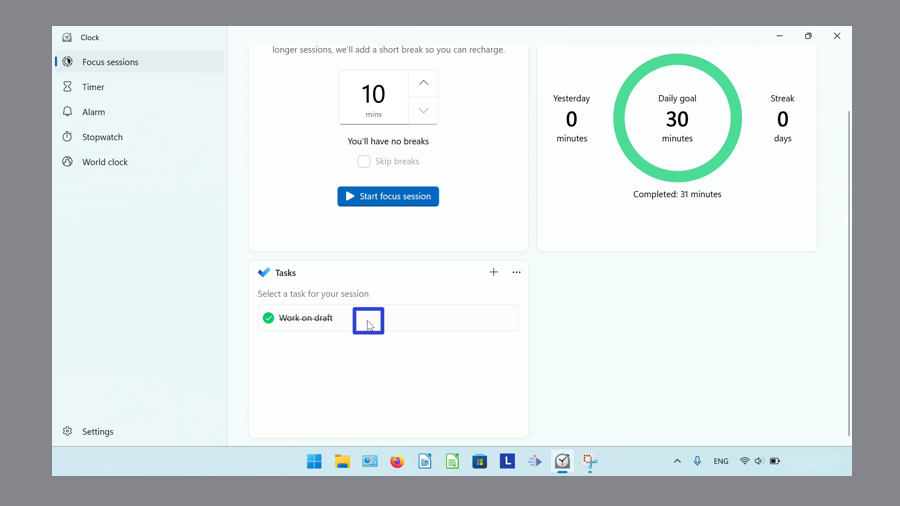
- Step 2: In the menu that opens, click “Mark as not started”. 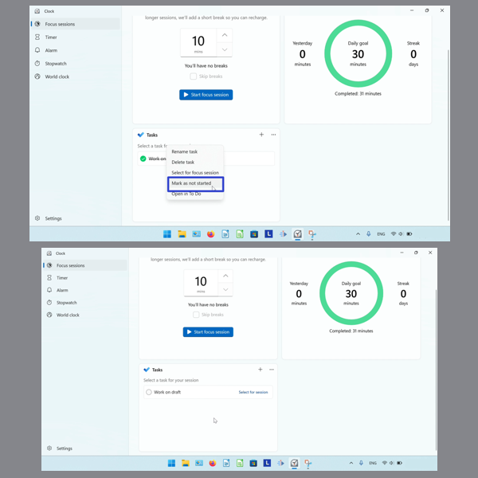
How to Rename a Task With Right Click
- Step 1: Add a task. Right click the task.
- Step 2: In the menu that opens, click “Rename”. 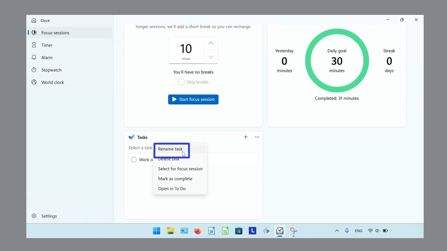
- Step 3: Type any text to rename the task, then press Enter.
How to Rename a Task With Double Click
- Step 1: First add a task. Double click the task name. 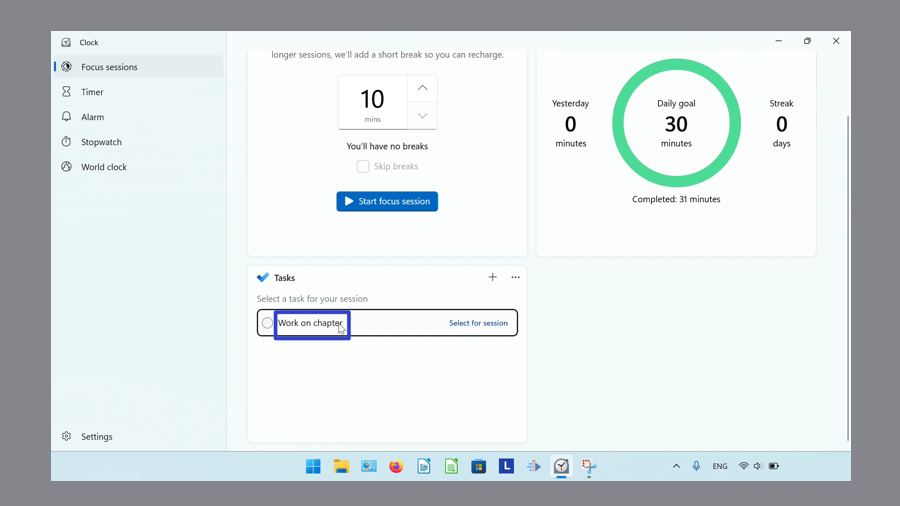
- Step 2: Type any text to rename the task, then press Enter.
How to Delete a Task
- Step 1: Add a task. Right click the task.
- Step 2: In the menu that opens, click “Delete task”. 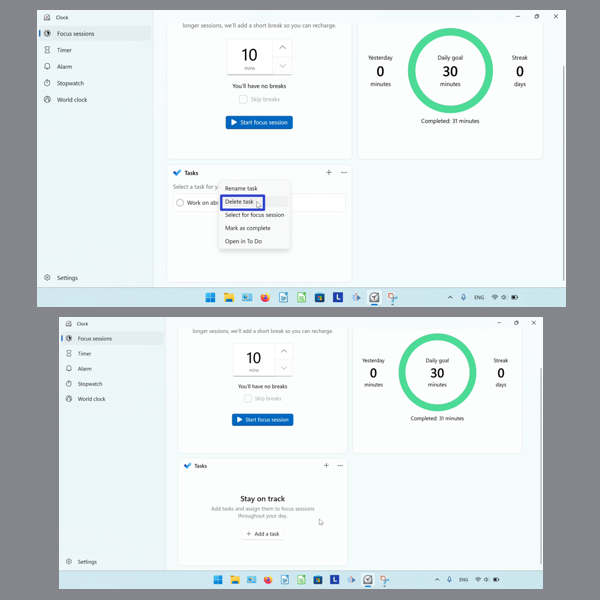
Save these instructions for later with this free tutorial PDF.